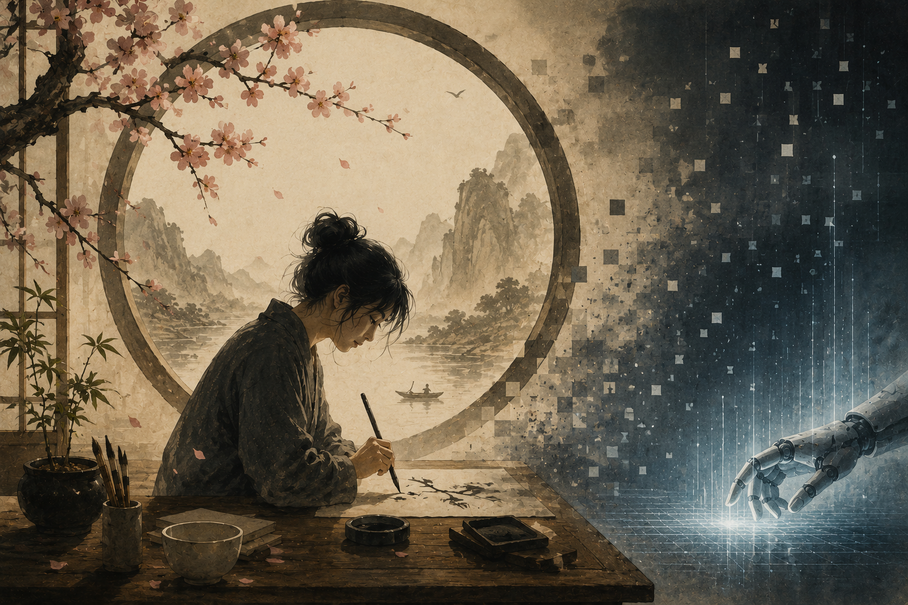

This is a highly opinionated piece. I am not here to propose a new research direction or a business idea, but to name a different kind of threat than the ones I study every day as a Ph.D. student working on AI security and safety.

Why do we still listen to John Denver? Why do people still read Hemingway's The Old Man and the Sea, still stand in front of Da Vinci's work in crowded galleries, still play Beethoven's symphonies at concert halls centuries after they were composed?
There are many reasons, of course. Some say it is because these are masterpieces of craft that reward endless revisiting. Others point to the memories these works carry such as the particular time and place where you first encountered them. For scholars and writers, they are inexhaustible wells of meaning, works that generations keep returning to, analyzing, and drawing inspiration from. All of these explanations hold truth. But I want to focus on one thread that I think deserves some attention, especially now, which is imperfection.
These works carry something that perfection cannot, such as the weight of a human being who hesitated, who struggled, who felt something and tried, however imperfectly, to put it into sound or words or paint. That might seem like a strange thing to say about Beethoven or Da Vinci, artists whose technical mastery is precisely what made them legendary. But mastery and perfection are not the same thing. Even in their greatest works, there are traces of the human hand — choices that reflect temperament rather than optimization, passages shaped by personal suffering or joy rather than by calculation. It is those traces that allow us, centuries later, to feel something when we encounter their work. We laugh, we cry, we sit quietly with a strange ache we cannot quite name, all because another imperfect person reached across time and touched something real inside us.
The Beauty of the Imperfect
The Japanese have a word for this kind of beauty: wabi-sabi (侘寂), an aesthetic philosophy rooted in fifteenth-century Zen Buddhism that finds meaning in things that are imperfect, impermanent, and incomplete, such as a crack in a teacup, moss growing over a stone, the slow weathering of old wood [1]. It stands as a quiet counterpoint to much of what our sleek, mass-produced, technology-saturated culture tends to value.
I think wabi-sabi captures something essential about why human-made art still matters in the age of AI. The imperfections are not flaws waiting to be corrected, but rather they are the very thing that makes a piece of music or a painting feel alive, because they remind us that a living, breathing, imperfect person made it.
Jacob Collier, the Grammy-winning musician, put it well in a recent interview when he said that AI in music is "almost too perfect to be interesting," and that what people actually need is "an imperfect wiggly person to relate to" [2]. That observation resonates deeply. Not every legendary singer had the best technique, and not every beloved author wrote the tightest prose, but what they delivered was something that technique alone cannot produce, such as the emotion that feels earned, expression that feels lived. When we listen to their music or read their words, we feel connected to what they are expressing, whether or not we share the same cultural, linguistic, or personal background. The connection is human, not technical.
This may be a different kind of imperfection than a cracked note in a song or an unpolished sentence in a novel, but I think the underlying impulse is the same. We do not love a person because they are perfect in every way, because no human being can be. We love them despite the things we might not love, because of the messy, complicated, irreducible whole of who they are. I believe that is where the power of love comes from, and that is what makes bonds between partners, families, and friends grow stronger over time. We connect with people not in spite of their flaws, but through them, and I think the same is true of the art that stays with us.
What AI Cannot Do
There is something specific that AI lacks, and it is not intelligence or skill. Korean novelist Kim Ae-ran (김애란) named it in an interview on MBC. She called it "hesitation"[3]. AI produces answers fluently, confidently, and without pause, but sometimes in life we need exactly that pause. The moment before saying something difficult. The breath between notes. The flicker of doubt that makes the resolution feel meaningful. Hesitation is what keeps humanity present in our art, in our relationships, and in the fabric of our society.
And hesitation is closely tied to something else that AI struggles to replicate, which is the way human expression becomes entangled with memory. We do not just hear a song or read a book. We absorb it into the story of our own lives, and it stays there, accumulating meaning over time. That process depends on something imperfect and irreproducible, something rooted in the specific circumstances of a life being lived.
Imperfection matters to memory not because rough edges are inherently more memorable, but because they are evidence that a human being was here. A voice that cracks, a brushstroke that trembles, a sentence that reaches for something it cannot quite say. These are traces of someone real, and it is that knowledge, that someone lived this and felt this, that gives a piece of art the power to carry meaning across time and between people.
The Real Threat
If hesitation and memory are so central to what makes human expression meaningful, then the question becomes whether those qualities can survive in the culture we are building around us. The conversation around AI usually centers on jobs. Will it replace writers, musicians, artists, programmers? That is a legitimate concern, but I want to name a different threat, one that feels more fundamental and far less discussed, and I believe it is "memories".
This is not just a philosophical hunch. Research in psychology has shown that music-evoked nostalgia provides measurable psychological benefits, fostering social connectedness, raising self-esteem, strengthening one's sense of meaning in life, and even buffering against sadness and loneliness [4]. Crucially, the music that triggers these effects is not just any music. It is music tied to personal memories, the songs that happened to be playing during the formative moments of our lives. Neuroscience research has shown that our brains bind us to the music we heard as teenagers more tightly than anything we encounter as adults, and that this connection does not weaken with age [5]. We return to old songs not simply because they sound good, but because they carry the weight of who we were when we first heard them. The friends, the places, the particular quality of light in a room we have not been in for years.
Now consider what happens when the music we grow up with is AI-generated, when the books we read and the art we see and the videos we watch are all produced by machines. In the moment, they might be perfectly fine. Entertaining, polished, even beautiful. But will they anchor the same memories? Will a song generated by an algorithm carry the same weight twenty years from now as one written by a person who poured their own heartbreak into it?
I should be honest about the limits of this argument. Someone might point out that they have strong memories attached to a video game soundtrack that was procedurally generated, or that a child growing up with AI-generated bedtime stories will remember them just as fondly as any other. That may well be true on an individual level. But what I think is at stake is something broader, such as shared cultural memory, the kind that binds communities and generations together. That kind of memory seems to depend on knowing that a real person made something, that it came from a life that was lived, and that the imperfections in the work are traces of that life. When authorship becomes anonymous and algorithmic, that connection starts to thin.
This concern is not speculative. Researchers are already documenting what they call "AI-induced cultural stagnation." A 2026 article in The Conversation presented empirical evidence that generative AI naturally produces content that is compressed and generic, and that homogenization happens before any recursive training loop even enters the picture [6]. When AI produces content autonomously and at scale, the output trends toward the familiar and the conventional, and a world flooded with such content risks becoming what one analysis described as a hall of mirrors, an endless reflection of synthetic information detached from human reality [7].
If future generations grow up in a world where most cultural artifacts are AI-generated, what will they reminisce about? What will carry the imperfections, the hesitations, the emotional fingerprints of a real human being? The threat is not a dramatic one. It is quiet, a slow erosion of the raw material from which human memory is built.
Not Everything Is Doomed
I am definitely not a pessimist about this (in fact my daily life is to do research in AI), because technology is not inherently the enemy of memory. Sometimes it is the very thing that brings memory back to life.
I recently came across a video of a grandson who used AI to animate old family photographs, turning still images of his grandparents and relatives into short moving clips where their faces smiled, blinked, and turned. Tools like MyHeritage's Deep Nostalgia have enabled millions of people to see deceased loved ones move again, using nothing more than a faded photograph [8]. That is not memory being replaced by technology; that is memory being revived by it.
Of course, not every application of this technology is used for good, but we still have to try to push in this direction, toward uses that deepen our connection to the past rather than sever it.
But even when technology serves memory well, it is worth remembering that the memories themselves have to come from somewhere. And what generates them, more than anything else, is community. The school you attended, the friends you made from elementary school through college and into the workplace, the teachers who shaped you, the neighbors you grew up with. I recognize that online communities and virtual spaces are already forming the basis of real memories for younger generations, and I do not dismiss that. But there is something about shared physical presence, about growing up alongside other imperfect people in the same imperfect place, that creates a kind of memory no algorithm can fabricate. The kind you carry forward through the rest of your life without ever deciding to.
A Different Kind of Threat
We now live in a world where AI cannot be set aside. That ship has sailed. People with AI accelerate faster, in the same way that people with internet access outpaced those who relied on print newspapers, and the productivity gains are real and irreversible.
But I think we owe it to ourselves to be honest about what we might lose in exchange. The world without those memories we had, the imperfection we felt. Would that explain why so many people still gravitate toward music from decades past, why fashion and television and culture keep cycling back to older eras? Perhaps we are already sensing, even if we cannot quite articulate it, that something about the present feels too polished, too optimized, too frictionless, and we reach backward for the rough edges that remind us we are human.
As someone who spends his days studying AI security, finding adversarial attacks, probing safety alignments, testing how models break, I can tell you that the technical threats are real and serious. But this quieter threat, the one that lives not in model weights but in the fabric of human culture, is also the one I find myself thinking about most.
And if imperfection matters this much in our culture, in our art, in the memories we share, then maybe it matters just as much in how we see ourselves. The word perfect comes from the Latin perfectus, the past participle of perficere, and its original meaning is not "flawless." It means "finished," "complete," "accomplished." If we take that seriously, then a life does not need to be flawless to be whole. It just needs to be lived, all the way through, with all the hesitation and roughness that living requires.
So do not be ashamed of being imperfect. The songs that stay with us were never the cleanest recordings. The people we love the most were never the easiest to love. And the version of yourself that will matter most, to the people whose lives you touch, is not the polished one. It is the real one, and it is what makes you, irreplaceably, you.
References
- "Wabi-Sabi: The Art of Imperfection." Utne. https://www.utne.com/mind-and-body/wabi-sabi/
- Jacob Collier, interview with Rags Martel (October 2025). MusicRadar. https://www.musicradar.com/artists/ive-spent-a-lot-of-time-sort-of-trying-to-bully-ai-into-being-interesting-jacob-collier-says-that-the-problem-with-using-ai-for-music-making-is-that-its-almost-too-perfect
- 김애란 (Kim Ae-ran), interview on MBC 손석희의 질문들 (April 15, 2025). Reported by 미디어오늘. https://www.mediatoday.co.kr/news/articleView.html?idxno=333849
- Sedikides, C., Leunissen, J. M., & Wildschut, T. (2022). "The psychological benefits of music-evoked nostalgia." Psychology of Music, 50(6), 2044–2062. https://journals.sagepub.com/doi/10.1177/03057356211064641
- Stern, M. J. (2014). "Neural Nostalgia: Why do we love the music we heard as teenagers?" Slate. https://slate.com/technology/2014/08/musical-nostalgia-the-psychology-and-neuroscience-for-song-preference-and-the-reminiscence-bump.html
- Elgammal, A. (2026). "AI-induced cultural stagnation is no longer speculation — it's already happening." The Conversation. https://theconversation.com/ai-induced-cultural-stagnation-is-no-longer-speculation-its-already-happening-272488
- "The Problem of AI-Generated Content Flooding the Internet." Onyx. https://www.onyxgs.com/blog/problem-ai-generated-content-flooding-internet
- "How to deepfake your grandparents' old photos." Freethink (2021). https://www.freethink.com/hard-tech/deepfake-tool